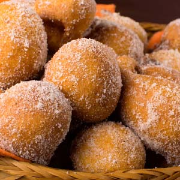
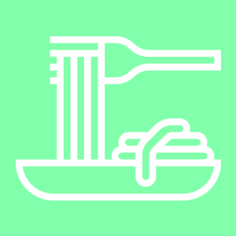
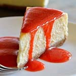
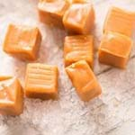

- Bolinho de Chuva
- Bala de Caramelo
- Chesscake Tradicional
Bolo de Chuva
Quem não gosta de um bolo de chuva? Hmmm, só de falar me dá agua na boca, é uma receita simples, saborosa, e que todo mundo pode fazer, vamos lá!?
Bala de Caramelo
As balas sempre foram meu ponto fraco. Quando eu era criança, contava as horas para que acabasse a aula e eu pudesse passar na banquinha de doces para comprar um pacotinho de balas e levar pra casa. Gosto tanto do sabor do caramelo que decidi fazer minhas próprias balinhas, e ficaram tão gostosas que é impossível não comer várias.
Chesscake
O cheesecake é quase que um pedacinho do céu em formato de um doce! Cremoso e saboroso, essa sobremesa não é tão difícil de fazer como se pensa... O melhor de tudo é que pode ser combinado com vários sabores: blueberry, uva, chocolate e até café!
Quem somos
Somos uma comunidade grastrônomica liderada pela Dona Benta. Estamos fazendo o melhor para prover um site estruturado e organizado com as receitas que você já conhece. Qualquer um pode colocar uma receita no nosso site, basta entrar em contato com o telefone (69 4002-8922), ou mandar um e-mail contato@donabenta.com.br, iremos atualizar o site com as receitas mais saborosas que vocês mandarem ^^!
Bolinho de Chuva
Ingredientes
- 2 ovos
- 1 xícara de açúcar
- 1 xícara (chá) de leite
- 2 e ½ xícaras e de farinha de trigo
- 1 colher (sopa) de fermento em pó
- 3 colheres (sopa) de açúcar para polvilhar
- 1 colher (sopa) de canela para polvilhar
- 1 litro de óleo para fritar
Modo de preparo
- Misture todos os ingredientes até obter uma massa cremosa e homogênea.
- Deixe aquecer uma panela com bastante óleo para que os bolinhos possam boiar.
- Quando o óleo estiver bem quente (180º C), com uma colher, comece a colocar pequenas quantidades de massa, e frite até que dourem por inteiro.
- Quando o óleo estiver bem quente (180º C), com uma colher, comece a colocar pequenas quantidades de massa, e frite até que dourem por inteiro.
Chesscake
Ingredientes
- 1 pacote de biscoito maisena
- 100 g de margarina em temperatura ambiente
- 400 g de cream cheese
- 1 lata de leite condensado
- ½ xícara de açúcar
- 3 ovos
- 250 g de geleia de morango
Modo de preparo
- Use um liquidificador para misturar o biscoito até ficar com uma consistência de farinha
- Coloque essa farinha em uma tigela e misture com o açúcar e a manteiga
- Amasse bem para virar uma farofa
- Unte uma forma desmontável e espalhe a farofa pelo fundo e pelas laterais, apertando bem para ficar firme
- Bata no liquidificador o cream cheese, os ovos e o leite condensado até formar uma massa homogênea
- Quando estiver pronta, despeje a massa em cima da farofa de bolacha e espalhe bem pela forma
- Adicione a geleia de morango por cima e leve ao forno pré-aquecido e asse em fogo médio por 30 minutos. Retire, aguarde esfriar e sirva e bom apetite!
Bala de Caramelo
Ingredientes
- 1 xícara (chá) de AÇÚCAR MASCAVO
- 1 xícara (chá) de AÇÚCAR BRANCO
- 1 xícara (chá) de KARO
- 1 xícara (chá) de LEITE CONDENSADO
- ½ xícara (chá) de MANTEIGA
Modo de preparo
- Passe o açúcar branco e mascavo pela peneira e misture com o restante dos ingredientes em uma tigela grande.
- Leve ao microondas em potência alta de 9 a 10 minutos (Meu microondas é da marca Brastemp e fiz em potência alta, mas pode variar de marca para marca).
DICA: A tigela deve ser grande, pois ao ferver triplica de volume. - Mexa de 2 em 2 minutos para misturar bem os ingredientes.
- 1Ao final do tempo a mistura estará bem borbulhante e homogênea, parecido com brigadeiro quando desgruda do fundo da panela.
- Despeje em um refratário ou forma untada com margarina e quando estiver morno retire e corte os caramelos com uma faca.
- Embrulhe em papel celofane.
DICA: Eu fiz na panela também e deu certo, mas fiz meia receita pra testar. Depois que começou a ferver, eu cozinhei mexendo sem parar igual brigadeiro em fogo médio/baixo por 4 a 5 minutos… E deu certo! Solta do fundo igual a brigadeiro quando está no ponto.